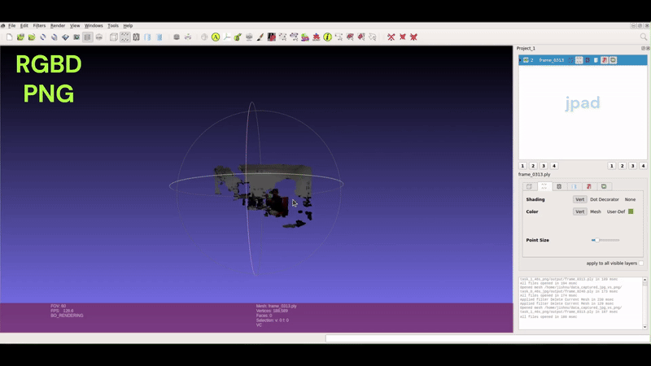

Save raw depth as JPEG or PNG?

Index
- Index
- The Spark: A Quest for Compression
- The Twist: Shaky 3D Scenes
- RGB + JPEG Depth Scene Point Cloud
- The Discovery: Switching to PNG
- The Evidence: Videos and Point Clouds
- Lessons Learned: Why PNG Wins
- Closing Thoughts
The Spark: A Quest for Compression
In my recent robotics project, data collection was progressing at full steam. The challenge? Managing the ever-growing volume of RGB and depth images. 📈 Compression seemed like the perfect solution. For RGB images, JPEG was a natural choice—efficient, widely used, and capable of reducing file sizes significantly. But then came the question: Could JPEG work for depth images too? 💾
Eager to streamline the process, I stored both RGB and depth images in JPEG format. It felt like a practical and straightforward decision at the time.
The Twist: Shaky 3D Scenes
Things took an unexpected turn when I moved to the next phase: generating 3D scene point clouds from the depth data. Point clouds are critical for extracting insights and performing spatial analysis. 🧠 Using my JPEG-based dataset, I plotted the point clouds—and that’s when the problems began. The 3D scenes were noisy, unstable, and lacked the precision I needed. ❌
Digging deeper, I realized that JPEG’s 8-bit storage capacity was the issue. Depth data, which demands high precision, was being constrained by the format’s limitations. Crucial details were lost, resulting in inaccuracies in the visualized 3D scenes.

The Discovery: Switching to PNG
To address the issue, I switched to storing depth images in PNG format. Unlike JPEG, PNG supports 16-bit storage, which offers a much higher range for representing depth values. With this new setup, I recollected data and generated fresh point clouds. 🎨
The results were striking. The PNG-based depth data produced clear, accurate, and stable 3D scenes. The increased bit depth preserved the subtle variations in depth values, enabling precise visualization and analysis. 🌄
What seemed like a minor choice of file format turned out to have a major impact on the quality and usability of the data.

The Evidence: Videos and Point Clouds
To highlight the differences, I created visual comparisons:
It is evident that JPEG depth loses some depth information, while PNG is better at capturing a wider range of depth values. These visualizations clearly demonstrate why PNG is the superior choice for depth data.
Lessons Learned: Why PNG Wins
The key factor is bit depth. JPEG’s 8-bit limitation truncates depth information, leading to significant data loss. PNG’s 16-bit capacity retains the full range of depth values, preserving the integrity of the data.
While JPEG remains excellent for RGB images, the precision needs of depth data make PNG the better option. The slightly larger file size is a small trade-off for the significant gains in accuracy and reliability. 📁
Here’s what I did to subscribe to depth data from the ROS topic on the Fetch robot.
if depth.encoding == "32FC1":
# Convert depth message to OpenCV format
depth_cv = self.cv_bridge.imgmsg_to_cv2(depth)
# Replace NaN values with 0 and convert from meters to millimeters
depth_cv = np.array(depth_cv)
depth_cv[np.isnan(depth_cv)] = 0
depth_cv = depth_cv * 1000
# Convert to uint16 for consistency
depth_cv = depth_cv.astype(np.uint16)
# TODO: Save as png
Closing Thoughts
In robotics, even seemingly minor decisions—like choosing a file format—can have far-reaching implications.
Next time you’re deciding between JPEG and PNG for depth images, remember: precision matters. Choose wisely to let your data shine—clearly and accurately. ✅
If you’ve worked with other formats for depth data, I’d love to hear your insights. 🤝✨
Feel free to reach out in case you have a query. You are always welcome. You can find me on X at @jis_padalunkal.